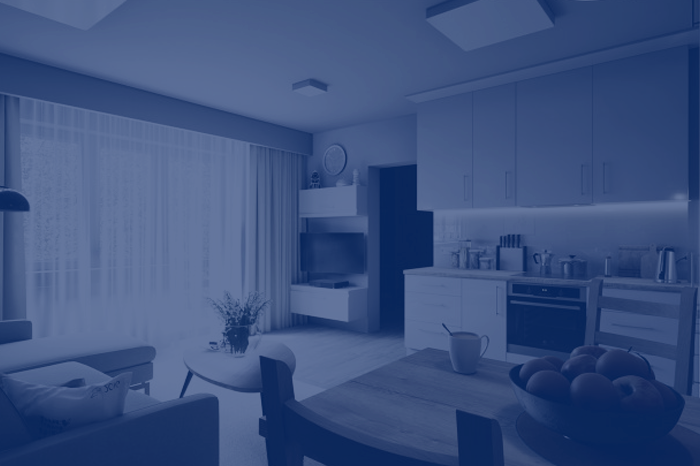

A Segurança e o Bem Estar de Sua Família São Nossa Maior Preocupação!
Por esse motivo, na dedetização em residências, trabalhamos com produtos que possuem baixa ação tóxica, são diluídos à base de água e não impactam o Meio Ambiente. Dependendo do serviço podemos realizar a operação inclusive com animais de estimação no ambiente.
Alguns de nossos produtos não têm cheiro e não há a necessidade de se ausentar do ambiente, nem de retirada de louças ou objetos dos armários. Só utilizamos produtos recomendados pelo INEA e certificados pela ANVISA.
Desinsetização Residencial
No tratamento contra baratas, formigas, traças, entre outros insetos utilizamos produtos na forma gel ou líquido:
- Aplicação de Gel: Aplicamos o gel com o auxílio de um aplicador de precisão, nas áreas estratégicas onde as baratas se abrigam e se agregam (frestas, cavidades, dobradiças, cantos de armários e rodapés) ou por onde elas se movimentam.
- Tratamento Líquido com Barreira Química: Utilizamos fórmulas de inseticidas altamente eficazes com efeito residual prolongado, que iniciam ação ao simples contato com os insetos.
- Preservação de Móveis e Superfícies: O sistema empregado de imunização é anticorrosivo, não é gorduroso, não mancha superfícies tratadas e é totalmente seguro para a saúde de pessoas e animais domésticos.
Segurança, qualidade e comodidade
Livre sua casa de pragas como baratas, cupins, formigas e ratos com o mínimo de interferência na rotina familiar.
Descupinização (Tratamento contra Cupins)
No tratamento contra cupins de madeira seca e subterrâneos, utilizamos injeções de cupinicidas aplicadas através de microperfurações na madeira dispostas geometricamente, de tal forma que o líquido inseticida penetre e sature a madeira em sua totalidade, imunizando e preservando o móvel ou estrutura.
Outra técnica amplamente utilizada é a pulverização de cupinicida de alta fixação, para forros, telhados e locais onde não haja necessidade de perfurações.
Desratização (Controle de Roedores)
No tratamento contra ratos utilizamos raticidas anticoagulantes de dose única recomendados pelo INEA, com baixa toxicidade para humanos e animais domésticos.
Os raticidas agem eliminando os roedores após quatro ou cinco dias do consumo, secando o organismo do animal para evitar odores desagradáveis. Sua ingestão não é notada de imediato pelos roedores, o que evita que a colônia desconfie do alimento.
Qualidade de Vida para Toda a Família
Os insetos e roedores são grandes disseminadores de microrganismos nocivos. Assim, quanto mais limpo e livre de pragas o ambiente está, menos doenças e muito melhor é a qualidade de vida para sua família.